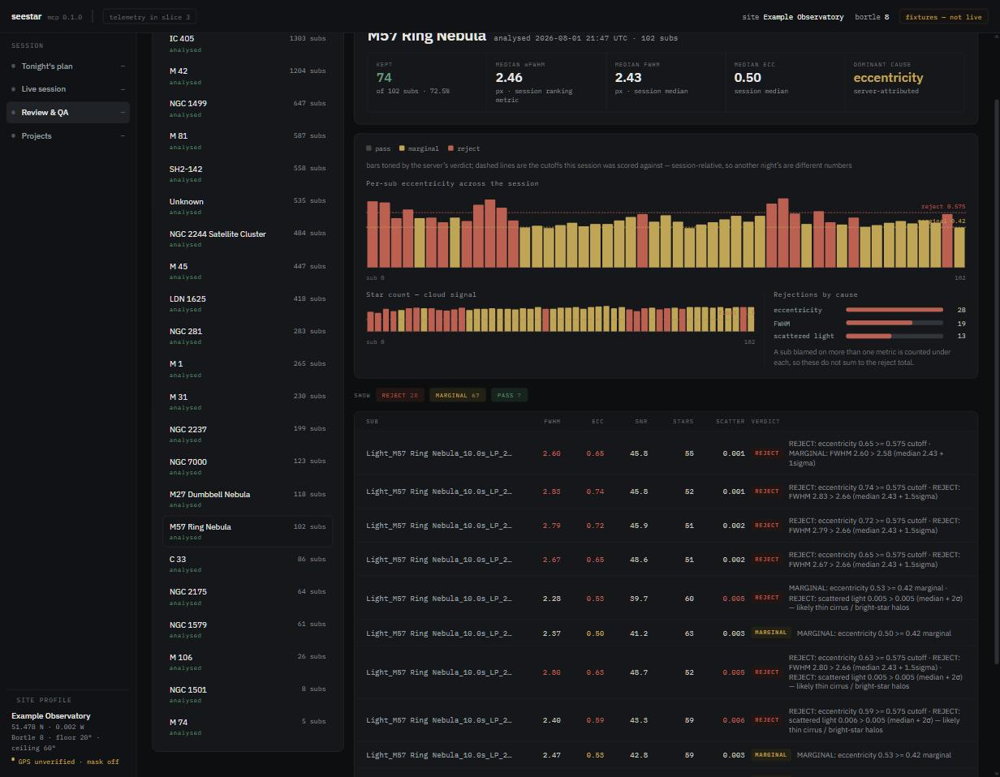
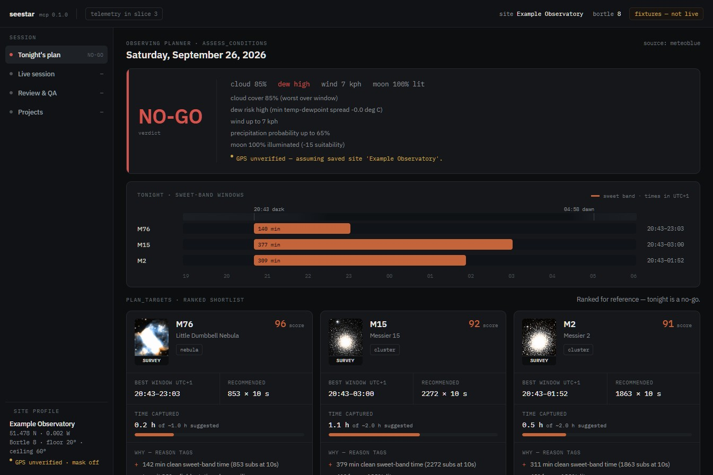

A dashboard for a ZWO Seestar S50 that reads — plans the night, watches the stack, and triages the morning after. It renders the server's quality verdicts and never re-derives one; where a value is missing it says so instead of showing a plausible number.

